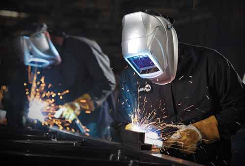

Welding is a fabrication process that is combining two different pieces of metal by using heat. Welding is mostly used in matals and thermoplastic; however, welding can also be used on wood and plastic. Welding electrodes are used for all types of manufacturing jobs. The welding rod has an outer flux coating which protects the metal from damages, stabilizes the arc, and improves the weld. There are specific properties attached to different types of welding rods. 6013 Electrodes are the most common type of electrodes. They can hold up to 60,000 pounds. They create a soft arc at the end which helps the welders to mould sheet metal. The 6013 is usally used for smaller welding projects; usally for thinner pieces of metal. The 7018 electrode is coated with a low moisture, which reduces the level of hydrogen stopping it from seeping into the weld. It can withstand pressure of 70,000 pounds. The 6011 and 6010 are very similar, they both can withstand 60,000 pounds of pressure. They both can be used for all welding positions. The 6011 has a high coating level of cellulose potassium, making it compatible with both AC and DC+ currents. It can be used to operate with bigger welding machines. The 6010 welding rod has the coating of high celluloose sodium, which means is can only be used with DC+ current.
There are six main welding types. Mig, Stick, Tig, PLasma Arc, Electron Beam and Laser, and Gas welding. Mig welding is one of the most common types of welding; it is easier for beginners. Mig welding is actully two different types of welding. The first type of Mig uses bare wire, and the second type uses a flux core. Bare wire Mig welding is used to join thinner pieces of metal together. Flux core Mig welding is used outdoors because it does not require a flow meter or gas supply. Stick welding, otherwise, known as Arc welding was used in older times, but is still used today. Stick welding is harder to learn than Mig welding. Stick welding uses a stick electrode welding rod. Tig welding is one of the most difficult types of welding. Both hands are required for Tig welding. One hand feeds the rod while the other hand holds a tig torch. The torch creates the heat and arc, which is used to weld most metals. Tig welders usally use steel, aluminum, stainless steel, copper, brass, bronze, and gold. Plasma Arc welding is used in aerospace applications. The electrode id recessed and the ionizing gases inside the arc are used to create heat. Electron Beam and Laseer Welding is a extremely precise, high energy welding techniques. This type of welding is used for the smallest of metals, but delivers a tremendous amounts of power. Gas welding is rarely used anymore. Gas welding requires oxygen and acetylene and can easily be transported.
